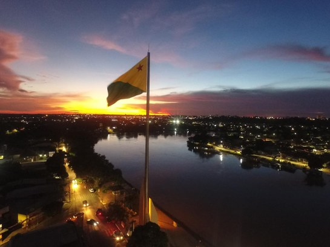

O Acre é um estado pequeno, mas cheio de história e natureza. Ele faz fronteira com a Bolívia e o Peru, e é conhecido por suas florestas densas e rios caudalosos. A capital, Rio Branco, tem uma cultura que mistura influências indígenas, brasileiras e bolivianas. O Acre também é famoso pelo seu Parque Nacional da Serra do Divisor, um lugar perfeito para quem gosta de ecoturismo e aventuras na natureza.
